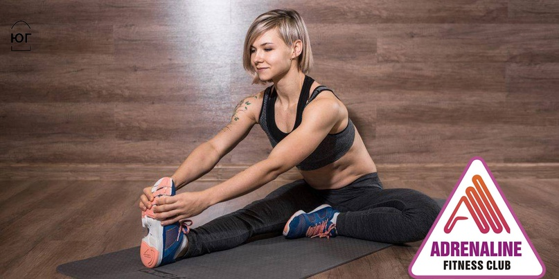

Любая тренировка должна начинаться с разминки и заканчиваться заминкой и растяжкой. Для чего это нужно, мы расскажем в этой статье.

Разминка
Разминка - это комплекс упражнений, которые выполняются в начале тренировки с целью разогрева организма, разработки мышц, связок и суставов. Как правило разминка перед тренировкой включает в себя выполнении легких аэробных упражнений с постепенным увеличением интенсивности. Эффективность разминки оценивается по пульсу: в течение 10 минут частота пульса должна возрасти примерно до 100 ударов в минуту. Также важными элементами разминки являются упражнения на мобилизацию суставов (в том числе и позвоночника по всей длине), растяжение связок и мышц.
Разминка или растяжка, бывает:
1. Динамическая состоит из пампинга – вы принимаете позу и начинаете тянуться до точки, в которой чувствуете мышечное натяжение, затем возвращаете мышцы в исходное положение, то есть в исходную длину. Далее повторяете процедуру. Динамическая растяжка увеличивает силовые показатели перед «взрывной» силовой тренировкой или во время отдыха между подходами.
2.Статическая - растяжка подразумевает растягивание мышцы до точки, в которой вы чувствуете мышечное натяжение, и последующее сохранение данного положения на некоторое время. Такая растяжка безопасней динамической, однако она отрицательно сказывается на силовых показателях и показателях в беге, если ее проводить до тренировки.
Разминка перед тренировкой - очень важный компонент тренировочной программы, и важна она не только в бодибилдинге, но и в остальных видах спорта, тем не менее многие атлеты полностью игнорируют ее.
Заминка
Не менее важное значение в спорте имеет и заминка после тренировки. Она представляет собой набор успокаивающих упражнений, выполняемых в конце тренировки после основных упражнений. Заминка после тренировки позволяет успокоить сердечно-сосудистую систему, снизить риск застоя в мышцах крови, предотвратить появление мышечных болей, вернуть сократившиеся мышцы в нормальное состояние, понизить до нормы как температуру тела, так и содержание активизирующих сердечную мышцу гормонов.
В качестве заминки можно использовать небыстрый бег, который постепенно переходит в ходьбу, а также растяжения. Заминка помогает удалить накопленную молочную кислоту, которая может служить причиной спазмов и тугоподвижности. Заминка позволяет постепенно снизить частоту пульса, приводя сердце в нормальное состояние. Однако, вопреки распространенному мнению, заминка не снижает отсроченную мышечную боль.
После тренировки, периферические вены, особенно внутри мышц, расширены, чтобы поддерживать адекватное кровоснабжение мускулатуры. Скелетная мускулатура работает как насос, помогая возвращать кровь к сердцу, и поддерживать его работу. Внезапная остановка физической активности может привести к тому, что большая часть крови начнет оставаться в венах мышц, таким образом, вынуждая сердце увеличивать частоту и нагрузку, чтобы поддерживать кровоток в органах.
Заминка позволяет предотвратить это состояние, так как во время ее выполнения тонус внутримышечных вен приходит в норму, и сердце не будет испытывать перегрузки по окончанию тренировки. Продолжительность заминки в бодибилдинге в среднем составляет 5-10 минут.
Растяжка до и после тренировки
Опытные инструкторы с самого начала учили нас растягиваться до и после тренировки. Нам говорили, что это приведет к снижению травматизма и подготовит наши мышцы для более сложных силовых тренировок, и как следствие уменьшит боль после тренировки. Прошло много лет, и сегодня уже не у кого нет сомнений в пользе растяжки до и после тренировки.
Новички обычно заканчивают свои занятия и идут в душ, забывая о том, что растяжка еще нужна и для нормализации пульса. Не нужно тратить на растяжку много времени до и после тренировки, будет достаточно 15-30 секунд стретчинга на каждую группу мышц.
Рекомендации:
1. Всегда перед тренировкой уделяйте растяжке 5-10 минут. Перед тренировкой лучше подходит динамическая растяжка.
2. В конце тренировки, мышцы хорошо разогретые. Это прекрасное время, чтобы растянуть их. В этом случае используйте статическую растяжку.
3.Добавьте по крайней мере один день в неделю для развития вашей гибкости. Качественно поработайте над растяжкой всех частей тела.
4. Перед растяжкой, было бы мудрым, вначале разогреть мышцы, например легкой ходьбой или бегом на месте, а затем заниматься стретчингом.